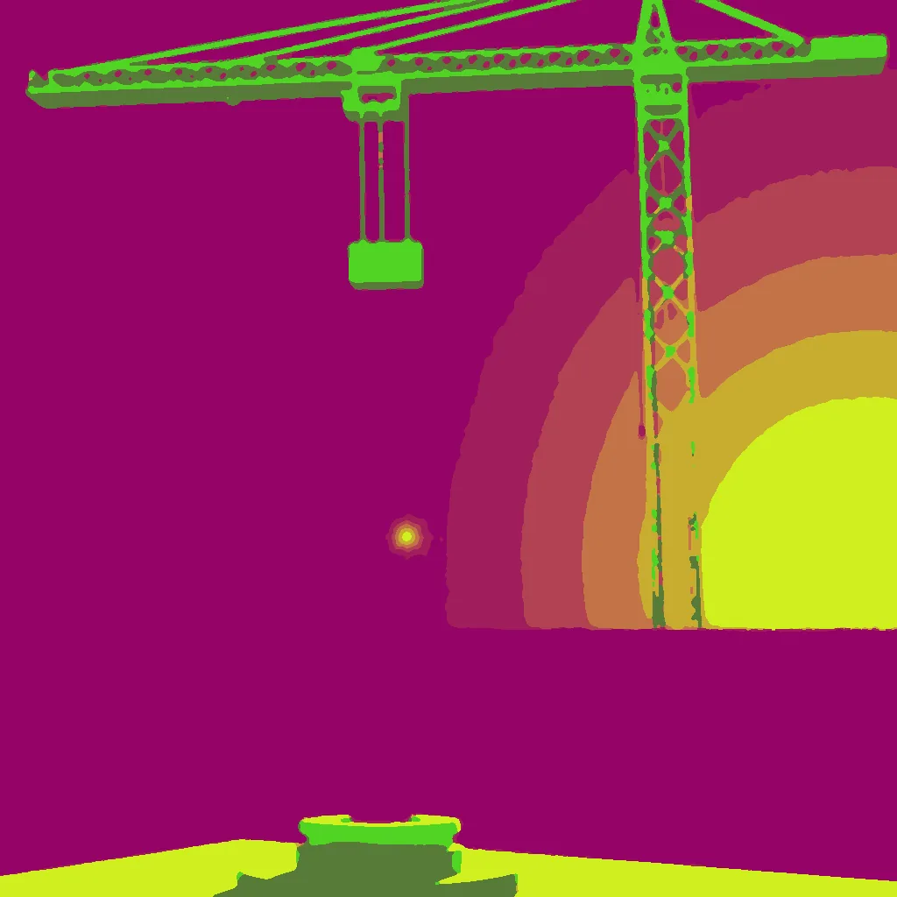

First Light ·
a 3D printer's first layer rising off the bed, a tower crane lifting the last section as the tower rises into the morning
Rain washes the floor clean, bright morning light cuts in. Plastic spools its first ring, flat against the heated bed. It climbs, steady and low, layer by layer it goes. A wall of brick adds up, then a crane lifts steel high. The tower sways into air, morning fills with the sway. Back to the nozzle now: it jerks on a sudden pull. The plastic shudders hard, dragged down by distant wind. It vibrates against glass, the small thing rises fast.
How this piece was made
- 01Poem written byQwen3.5 9B recorded
Local model on one RTX 3070 Ti. Until 11 October 2026 the same model scored its own drafts and wrote new ones.
- 02Image brief written byQwen3 8B recorded
Local model. It reads the poem and writes the subject part of the picture brief. Code writes the rest.
- 03Image rendered byFLUX.1 [schnell] recorded
Local image model on the same graphics card. It draws several candidates. Before judging, code crops each one and flattens it to at most eight colours, so the image shown is not the raw render.
- 04Image chosen byClaude Opus 5.5 recorded
Claude, working as c01corp’s art critic. It scores each candidate blind, without seeing the poem or the other candidates.
- Poem drafts
- 5 of 5
- Poem self-score
- 7/10
- Image candidates
- 2
- Judge’s score
- 4/10
- Selection
- Highest-scoring candidate that matched the subject. It did not clear the judge’s bar.
The image brief
Code wrote everything before “The subject:”. The local model wrote the part after it. When the chosen picture was a redraw, the judge’s notes on what to fix were added to the end of this brief and are not shown here.
A bold flat-colour screen-print poster of a 3D printer's first layer rising off the bed, seen close and large, and far behind it, small, a tower crane lifting the last section as the tower rises into the morning. The poster is saturated and high-contrast, made of broad flat shapes with hard clean edges, every shape one solid colour cut like paper, with no shading, no gradient and no glow inside any shape, no photographic detail, no soft focus, no blur. Two colours own the whole image: a field of bright plum purple, and fresh spring green for every growing, rising thing and nothing else. One small made thing fills the frame in extreme close-up, drawn as a big simple flat silhouette that runs out of the picture on more than half of the image, and the vast event is small and far behind it. The whole image is one continuous scene from edge to edge. Behind the main form one wide flat area of unbroken plum rests the eye. Small things are crisp silhouettes. The subject: A tower crane lifts a steel section diagonally across the frame, fresh spring green, its arms stretching toward a plum-purple sky. A 3D printer’s first layer, plastic spooled from a heated bed, shimmers as a small crisp green spark near the camera. Plum-purple ground stretches behind, quiet and unbroken, lit by bright morning light slicing from the left.